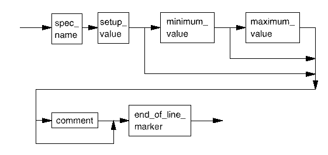

spec
These lines define the setup (initial), minimum and maximum values for each new spec (variable) within the current spec set. If either the minimum or maximum values are not supplied, they are set to the setup value.

spec_name |
An identifier. This must be unique within a specset. |
setup_value |
Defines the default value used by the spec_search testmethod. Value is a double float, with up to 5 digits after the decimal point. Valid range is -21474.83648 to +21474.83647. |
minimum_value |
Defines the minimum value used by the spec_search testmethod. Value is a double float, with up to 5 digits after the decimal point. Valid range is -21474.83648 to +21474.83647. |
maximum_value |
Defines the maximum value used by the spec_search testmethod. Value is a double float, with up to 5 digits after the decimal point. Valid range is -21474.83648 to +21474.83647. |